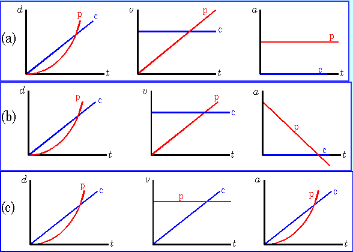

Car Chase
A car (c) with one
headlight burned out is traveling at a constant speed of 18 m/s and passes
a stopped police car (p). The car is pursued
immediately by the police cruiser, which has a constant acceleration of
magnitude 2.2 m/s2.
(a) How far does the police cruiser travel before
catching the other car?
(b) At what time will this occur? (Hint: Graphing
may help to visualize this problem.)
Which of the following sets of graphs represents
the situation in this problem?
